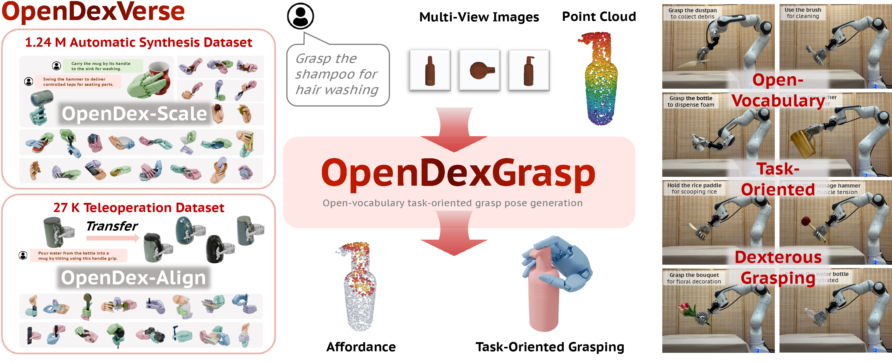
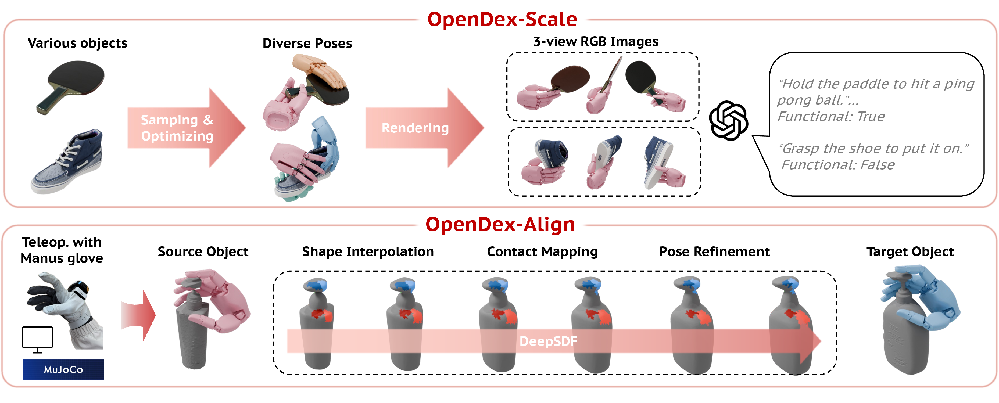
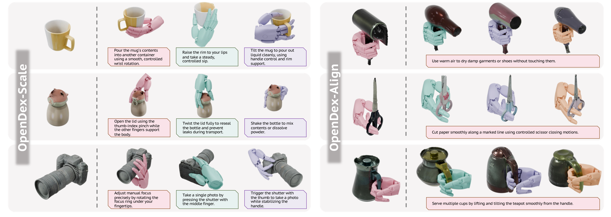
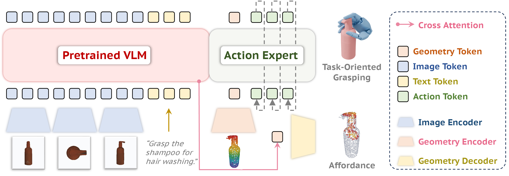
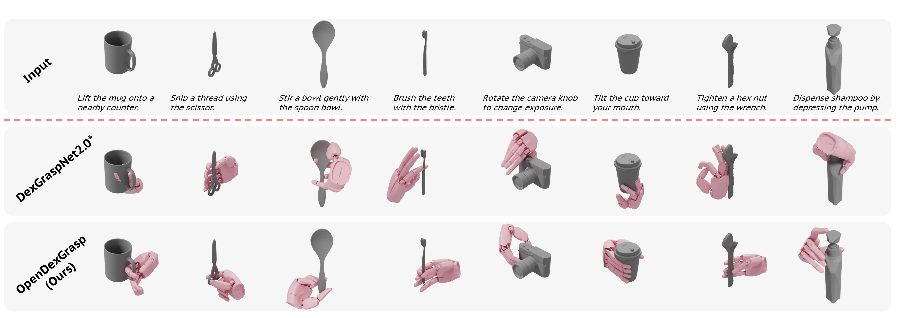
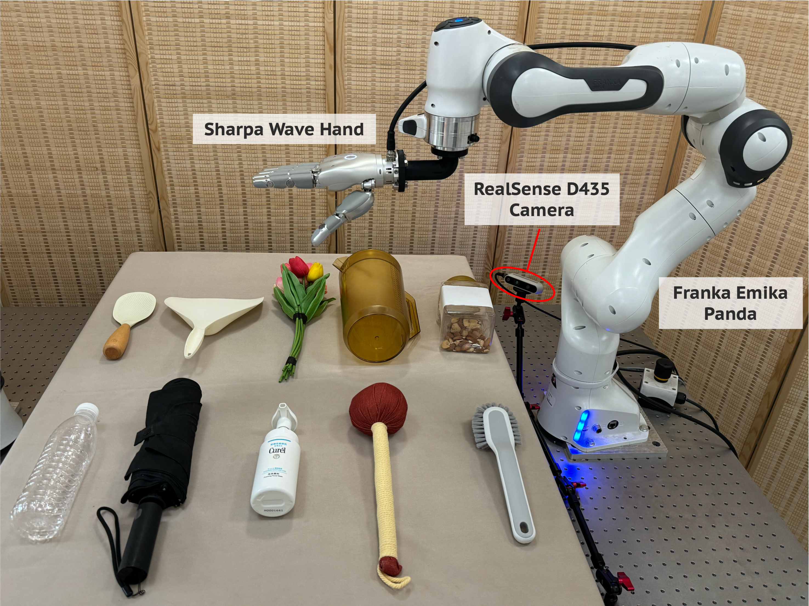
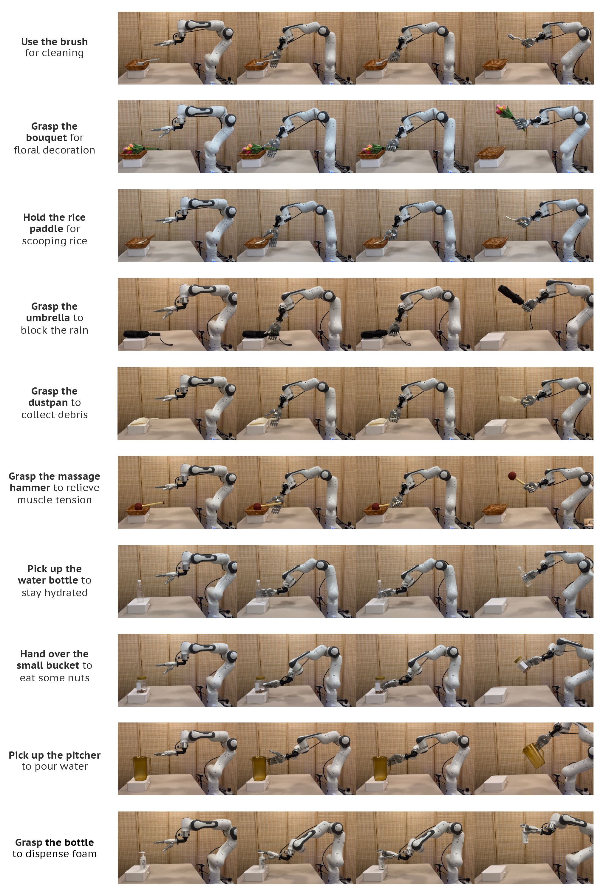

Task semantics choose the grasp.
The same object can demand different contacts depending on the instruction. OpenDexGrasp treats language, visible parts, and geometry as coupled evidence for the desired action.
From free-form language, multi-view RGB observations, and object geometry, OpenDexGrasp generates high-DoF hand poses that hold objects in ways that preserve the intended function.

Abstract
Dexterous grasp synthesis has made rapid progress in stable and physically plausible hand poses. Real manipulation, however, requires grasps that preserve task function: a kettle should be grasped by the handle for pouring, a knife should avoid unsafe contact regions during handover, and a spray bottle should leave the trigger accessible for use.
OpenDexGrasp studies open-vocabulary task-oriented dexterous grasp generation. The model must infer intent from natural language, ground the relevant object region from multi-view visual observations and 3D geometry, and generate an executable high-DoF grasp. Its key view is that affordance grounding and dexterous action generation are two supervision views of the same task-conditioned perception-action distribution.
Key Insight
The same object can demand different contacts depending on the instruction. OpenDexGrasp treats language, visible parts, and geometry as coupled evidence for the desired action.
Point-level affordance labels ground the latent representation on functional surface regions, while inference remains direct grasp generation rather than a cascade of map prediction and pose search.
The C2A Recipe first expands semantic-geometric support with automatic synthesis, then aligns the distribution using high-quality teleoperated demonstrations and category-level transfer.
OpenDexVerse
OpenDexVerse combines two complementary sources. OpenDex-Scale provides broad semantic-geometric coverage through automatic synthesis and vision-language annotation. OpenDex-Align provides embodied alignment through human teleoperation and dense-correspondence transfer.

Large-scale functional coverage from automatically synthesized grasps, rendered multi-view images, and VLM functional annotations.
Compact but high-quality alignment from Manus-glove teleoperation, contact mapping, pose refinement, and transfer to nearby instances.

Method
Multi-view images and instructions produce open-vocabulary semantic tokens, while the point cloud supplies metric geometry. A transformer-based flow-matching action expert fuses semantic, geometry, and action tokens to generate dexterous grasp poses.

Hidden states from a pretrained vision-language encoder retain correlations among task words, object appearance, and view-dependent part evidence. A point-cloud encoder contributes global geometry and point features for contact-rich generation.
The action expert learns a time-dependent velocity field that transports Gaussian noise to a task-conditioned grasp pose, directly modeling the distribution of functional dexterous actions.
A point-level affordance head supervises the same latent space, improving interpretability and functional contact without adding a separate test-time pose optimization stage.
Results
vs. 50.88% for DexGraspNet 2.0*
vs. 43.22% for DexGraspNet 2.0*
vs. 1.62 cm for DexGraspNet 2.0*
vs. 59.0% for DexGraspNet 2.0*
| Setting | Method | SIV | PD | SD | SR | Human score |
|---|---|---|---|---|---|---|
| Seen functional | DexGraspNet 2.0* | 5.12 | 1.04 | 1.51 | 50.88 | 6.10 |
| Seen functional | OpenDexGrasp | 1.28 | 0.39 | 1.37 | 68.07 | 7.85 |
| Unseen functional | DexGraspNet 2.0* | 6.86 | 1.62 | 4.29 | 43.22 | 5.37 |
| Unseen functional | OpenDexGrasp | 1.39 | 0.48 | 1.80 | 62.96 | 6.62 |

Demos
The learned policy is deployed on a real dexterous hand across seen and unseen categories, preserving functional contact choices while maintaining physically executable grasps.


Citation
@inproceedings{zhang2026opendexgrasp,
title = {OpenDexGrasp: Open-vocabulary Task-Oriented Dexterous Grasping},
author = {Jiyao Zhang and Junhan Wang and Tianyu Wang and Zeyuan Chen and Anthony Bolten and Yitong Peng and Hao Dong},
booktitle = {Conference on Robot Learning (CoRL)},
year = {2026}
}